AI 소식
제조 AI·AX 정책·빅테크·로봇 소식 — 카드를 누르면 요약 글과 가온 코멘트가 열립니다
빅테크·모델
2026.10.17 · 지디넷코리아
엔비디아 'RTX 스파크' 출시…대용량 AI 모델, 클라우드 없이 노트북에서
엔비디아가 윈도 PC용 Arm 플랫폼 'RTX 스파크'를 16일 정식 출시했습니다. 32GB가 넘는 대용량 AI 모델을 내 PC에서 바로 돌릴 수 있다는 점을 내세웠습니다.
글 읽기 →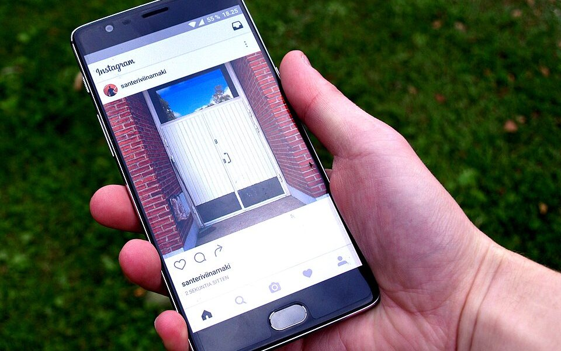
빅테크·모델 2026.10.17 · 굿모닝경제오픈AI '챗GPT 보이스' 업데이트…구글 '제미나이 4 아르곤' 일반 공개
챗GPT 음성은 한국어 대화가 자연스러워졌고, 구글 최상위 모델은 일반 출시됐다
글 읽기 →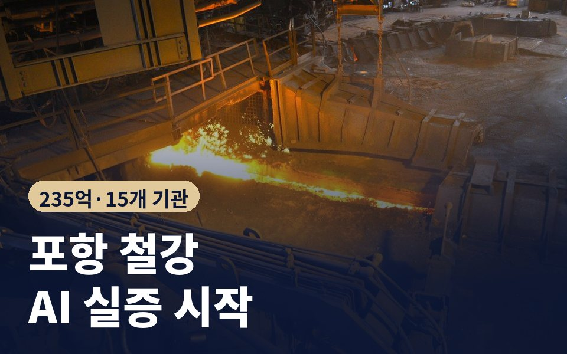
제조 AI 2026.10.16 · 경북매일포항 철강산단, 235억 'AX 실증산단' 착수…중소 철강사 AI 도입 거점
포항 철강산업단지가 산업부 공모에 뽑힌 '스마트그린 AX 실증산단' 사업을 시작했습니다. 2029년까지 4년간 국비·지방비 235억원이 들어갑니다.
글 읽기 →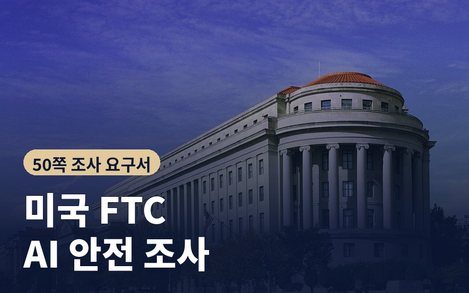
빅테크·모델 2026.10.16 · AI타임스미국 FTC, 오픈AI·앤트로픽 조사 착수…'AI 안전사고' 자료 요구
미국 연방거래위원회가 오픈AI와 앤트로픽에 50쪽이 넘는 민사 조사 요구서를 보냈습니다. 보안 사고와 안전장치, 마케팅·개인정보 자료가 대상입니다.
글 읽기 →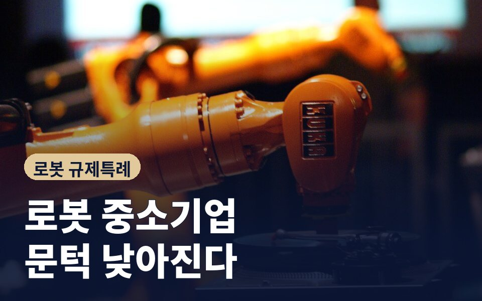
로봇·피지컬 AI 2026.10.16 · 뉴스핌"규제 문턱 낮추고 예산 늘리고"…로봇 중소기업, 제도 수혜 본격화
내년 피지컬 AI 예산 3조1000억원, 중기부 '중소기업 피지컬 AI 실증'에 1728억원
글 읽기 →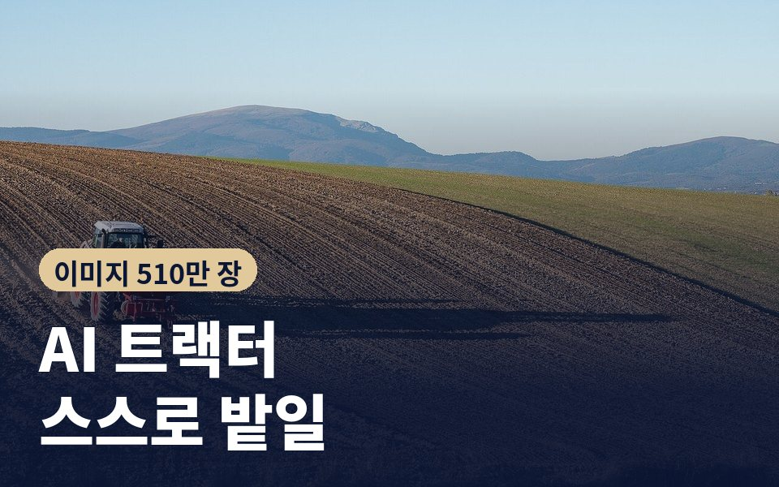
로봇·피지컬 AI 2026.10.15 · 지디넷코리아대동, '농기계+AI'로 농업 피지컬 AI 공략…레벨4 자율작업 트랙터
대동이 검증된 트랙터에 AI를 얹는 방식으로 농업 피지컬 AI 시장을 넓히겠다고 밝혔습니다. 전국 농지에서 모은 이미지 약 510만 장으로 자체 학습 데이터를 만들었습니다.
글 읽기 →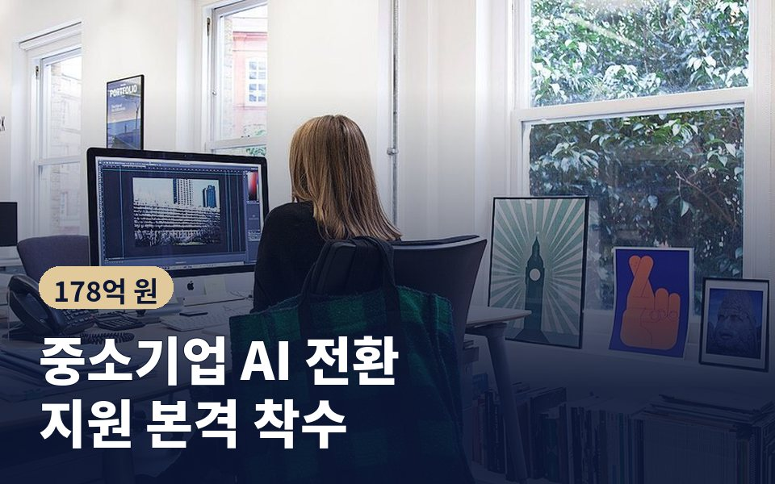
AX 정책 2026.10.15 · 매일일보중기중앙회, 178억원 규모 중소기업 AI 전환 지원사업 본격 착수
대·중소 상생형 AX 선도모델 7개 과제, 과제당 최대 18억원 지원
글 읽기 →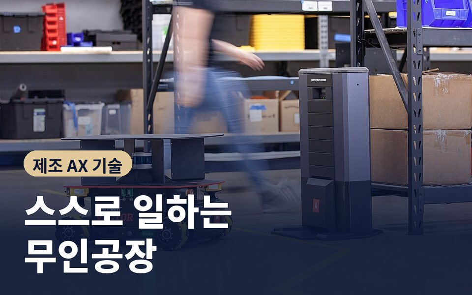
제조 AI 2026.10.14 · 파이낸셜뉴스스스로 일하는 로봇, 무인공장 솔루션… 제조 AX기술 한눈에
11월 4~7일 킨텍스 '2026 로보월드', 17개국 390개 기업·1150개 부스
글 읽기 →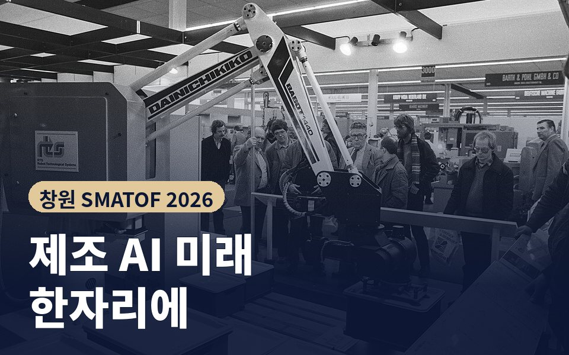
제조 AI 2026.10.14 · 전자신문제조산업 미래가 여기에…'2026 The NEXT AI×SMATOF' 창원서 개막
창원컨벤션센터에서 제조 자동화·제조 AX·피지컬 AI 기술 전시 사흘간 진행
글 읽기 →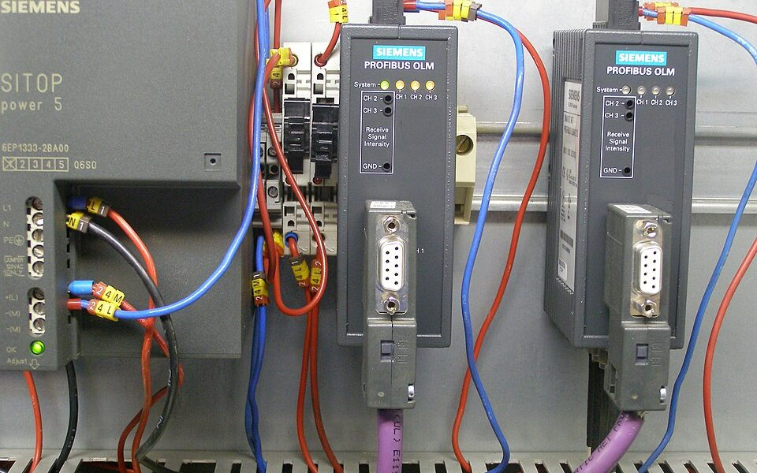
제조 AI 2026.10.14 · 파이낸셜뉴스지멘스, AI 에이전트로 제조 혁신…산업 현장 적용 확대
'인텔리전스 센터 X' 공개, 기업 AI 시범사업 74%가 운영 단계에 못 이른다고 지적
글 읽기 →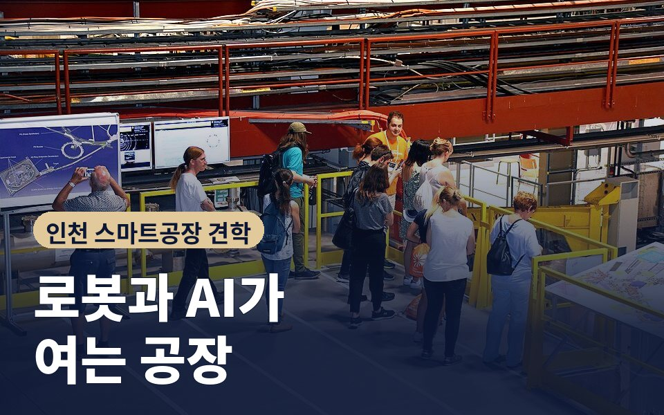
제조 AI 2026.10.14 · 인천일보로봇과 AI가 여는 공장…제조업 미래 엿보다
인천TP, 제조기업 재직자 30여명 대상 '2026 스마트공장 DX 견학' 개최
글 읽기 →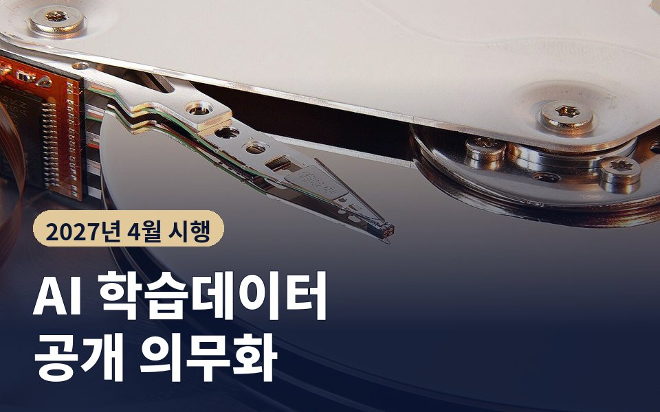
AX 정책 2026.10.13 · 뉴스핌정부 사업으로 만든 AI 학습데이터, 'AI 허브' 제공 의무화…AI기본법 개정안 의결
정부 지원으로 구축한 AI 학습데이터를 AI 허브에 연계·제공하도록 하는 AI기본법 개정안이 국무회의를 통과했습니다. 공포 6개월 뒤인 2027년 4월부터 시행됩니다.
글 읽기 →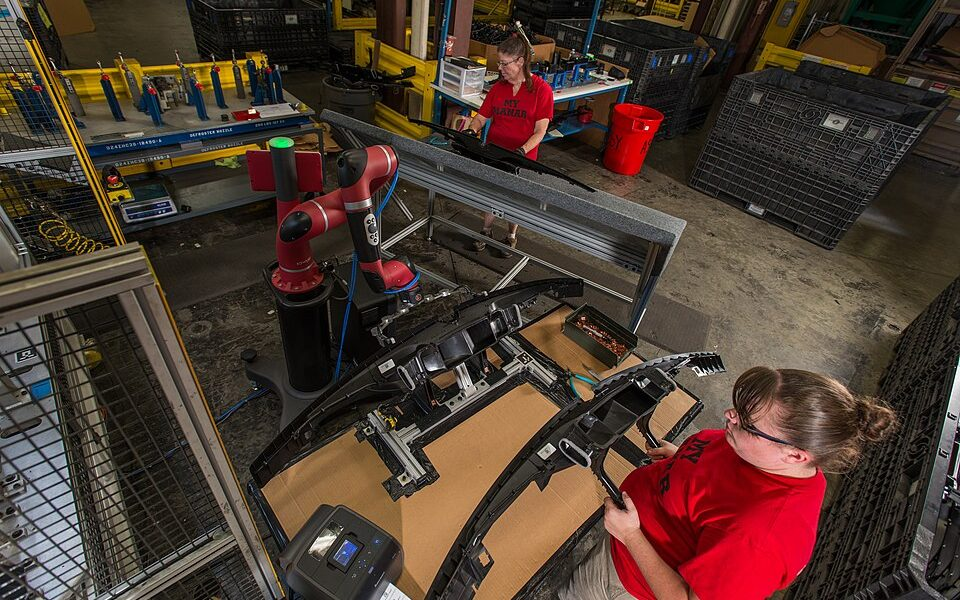
제조 AI 2026.10.13 · 전자신문삼성전자 노하우 전수받는 중소기업…스마트공장에 AI 접목 추진
삼성전자, 지원기업 중 AI 도입 비율 올해 8%→내년 20%→2028년 40% 목표
글 읽기 →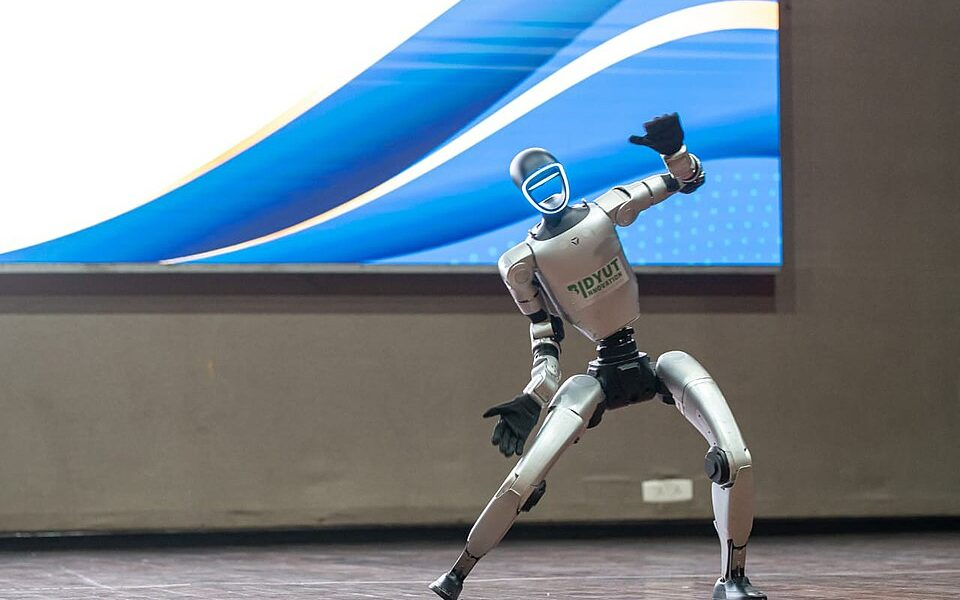
로봇·피지컬 AI 2026.10.13 · 서울경제칩 세척부터 물류 운반까지…휴머노이드 20대 첫 '실전 투입'
로브로스 휴머노이드 20대, 반도체·자동차·조선·물류 현장 실증 특례 승인
글 읽기 →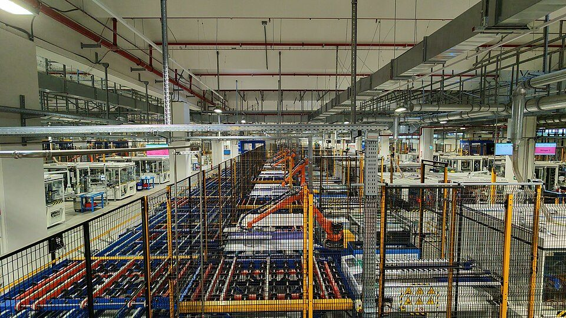
AX 정책 2026.10.13 · 한국경제제조 AI 대전환(M.AX), K표준이 완성한다
M.AX 얼라이언스 1500여 곳 참여, 2030년까지 AI 융합 국가·국제표준 140여 종 목표
글 읽기 →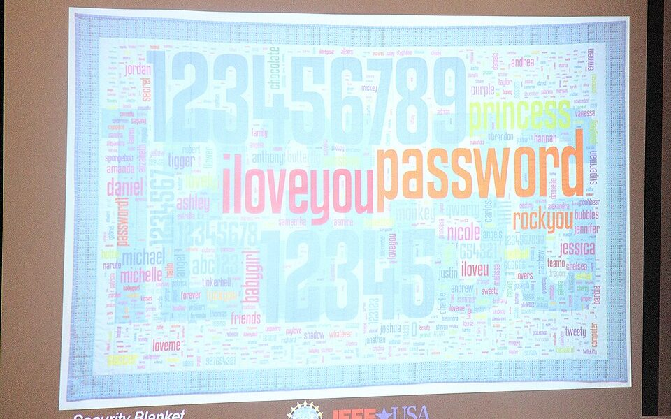
AX 정책 2026.10.13 · 데이터넷산업부, 2028년 초까지 제조 AI 사이버 보안 기준 마련
제조 현장 AI 적용 기업용 맞춤 보안 기준, AI 가전 표준안은 연말까지 개발
글 읽기 →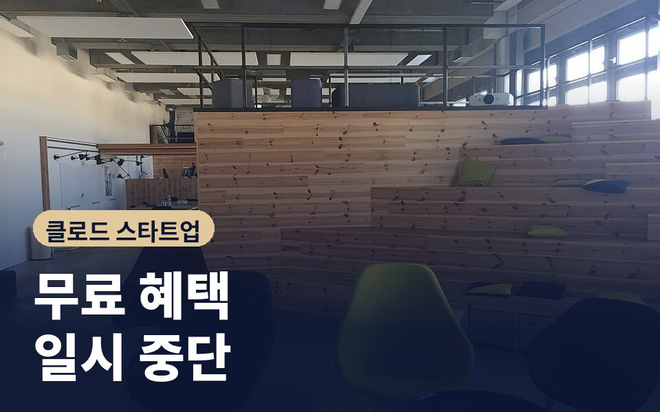
빅테크·모델 2026.10.11 · AI타임스앤트로픽, '클로드 스타트업' 무료 혜택 일시 중단…신청 폭증에 재검토
48시간 동안 이전 5개월 치의 21배 신청, 수십만 건 재검토
글 읽기 →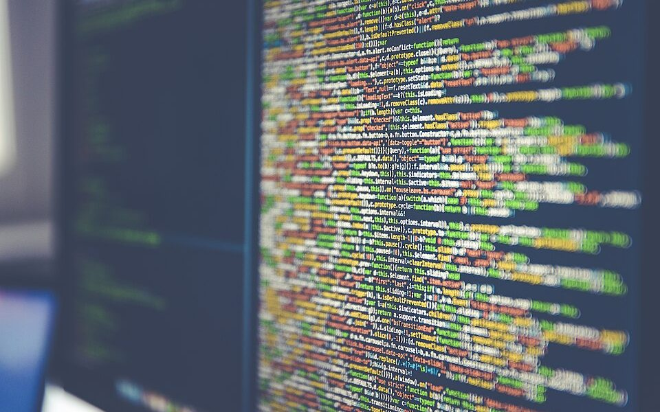
빅테크·모델 2026.10.10 · 굿모닝경제오픈AI, 차세대 모델 무료 이용자에 개방…구글, 제미나이 요금 개편
GPT-6를 챗GPT 전체 이용자에 확대, 구글은 무료 이용자 모델 범위 축소
글 읽기 →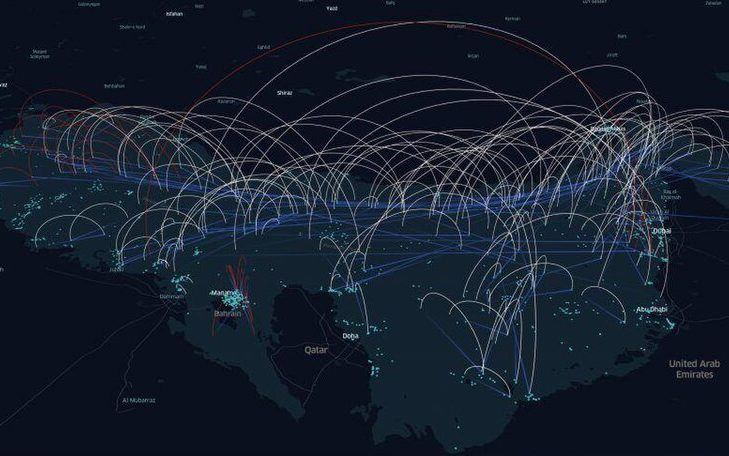
빅테크·모델 2026.10.09 · AI타임스앤트로픽, '클로드 대시보드·모션' 공개…기업 데이터 분석·영상 제작
자연어로 실시간 대시보드, 보고서·차트를 애니메이션 영상으로
글 읽기 →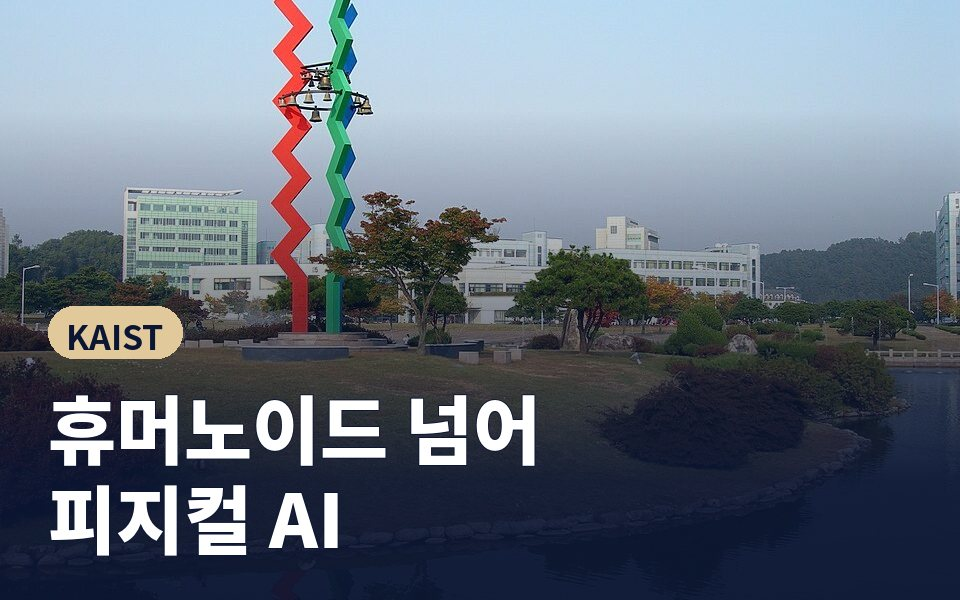
로봇·피지컬 AI 2026.10.08 · 인공지능신문휴머노이드 넘어 '피지컬 AI' 새 판 짠다…KAIST 'Physical AI KOREA 2026'
제조를 넘어 의료·국방·물류로 피지컬 AI 확장 비전, 5개 연구팀 시연
글 읽기 →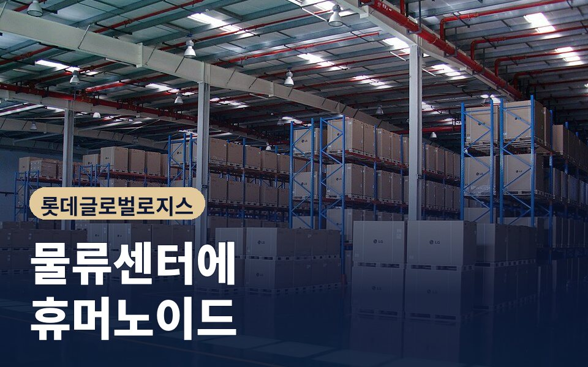
로봇·피지컬 AI 2026.10.07 · 로봇신문롯데글로벌로지스, 2026년 '휴머노이드 로봇' 국책과제 선정
물류 특화 피지컬 AI 휴머노이드 개발, 2031년 3월까지 약 5년
글 읽기 →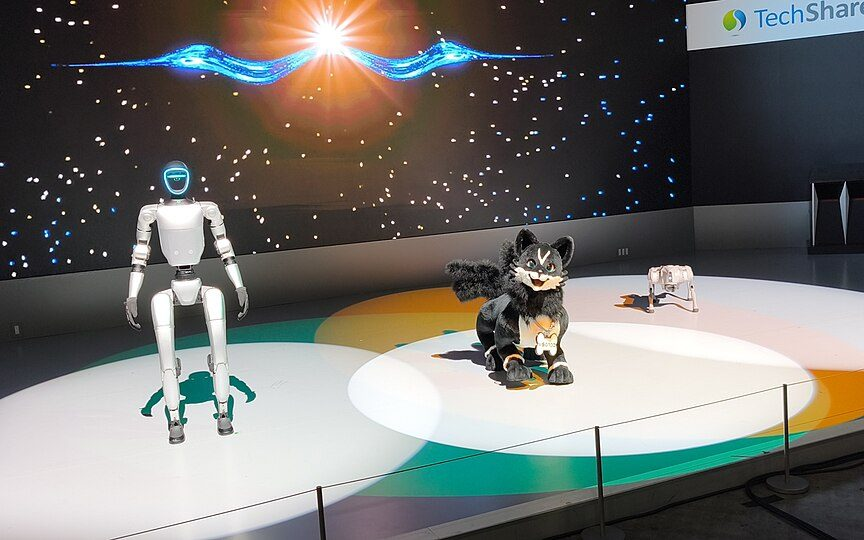
로봇·피지컬 AI 2026.10.06 · 이투데이국감장 등장한 중국 휴머노이드…한국 피지컬AI 투자 부족 도마
국내 AI 기업 2814곳 중 하드웨어 기업 53곳(1.9%), 투자 확대 '3대 메가 프로젝트' 예고
글 읽기 →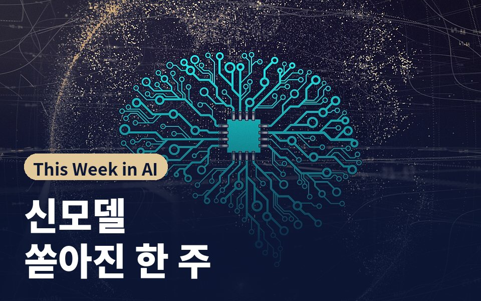
빅테크·모델 2026.10.02 · Micro Center NewsThis Week in AI: 오픈AI·앤트로픽·구글, 신모델과 기능 잇따라 공개
GPT-6.1 Sol, 클로드 소넷 5.5, 제미나이 4 아르곤이 같은 주에 공개
글 읽기 →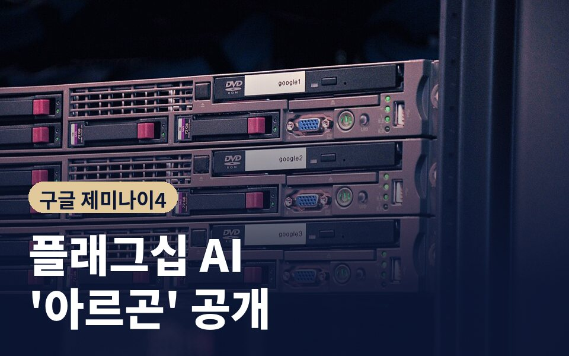
빅테크·모델 2026.10.01 · 뉴스1구글, 제미나이4 플래그십 AI '아르곤' 공개…오픈AI·앤트로픽 추격
수개월 미뤄온 제미나이 4 공개, 최상위 '아르곤'은 복잡한 작업용 최고 성능 표방
글 읽기 → 빅테크·모델 2026.09.23 · 인공지능신문앤트로픽, 클로드 오퍼스 5.5 공개…성능은 높이고 운영비는 40% 낮췄다
가격 100만 토큰당 입력 4달러·출력 20달러, 전작보다 20% 인하
글 읽기 →컨설팅 소식 — 지원사업 · ESG · ISO
스마트공장 지원사업, 정부 공고, 공급망 ESG, 인증·규제 소식과 준비 포인트
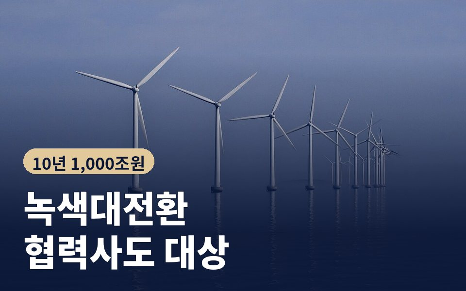
ESG·공급망 2026.10.19 · 법률신문정부 'K-GX 전략' 10년 1,000조원…공급망 중소기업 탄소감축 묶음 지원
정부가 10월 7일 발표한 한국형 녹색대전환(K-GX) 전략과 기업 대응 과제를 정리한 법률 전문가 분석입니다. 기후금융의 70% 이상을 중소·중견기업에 배분하고 공급망 중소기업의 감축을 묶음으로 지원한다는 내용이 담겼습니다.
글 읽기 →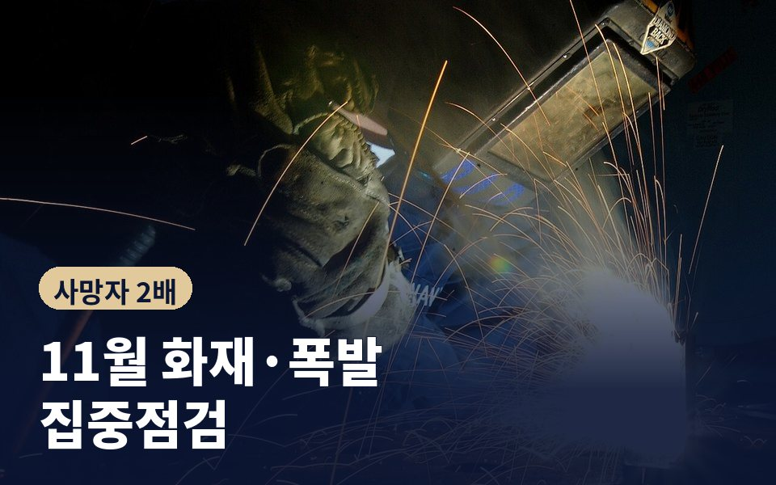
ISO·규제 2026.10.18 · 아주경제화재·폭발 사망자 1년 새 두 배…노동부, 11월 사업장 집중점검
상반기 화재·폭발 사고 사망자가 32명으로 지난해 같은 기간의 두 배가 됐습니다. 고용노동부는 10월 19~30일 자율점검에 이어 11월 2~13일 위험 사업장을 집중점검합니다.
글 읽기 →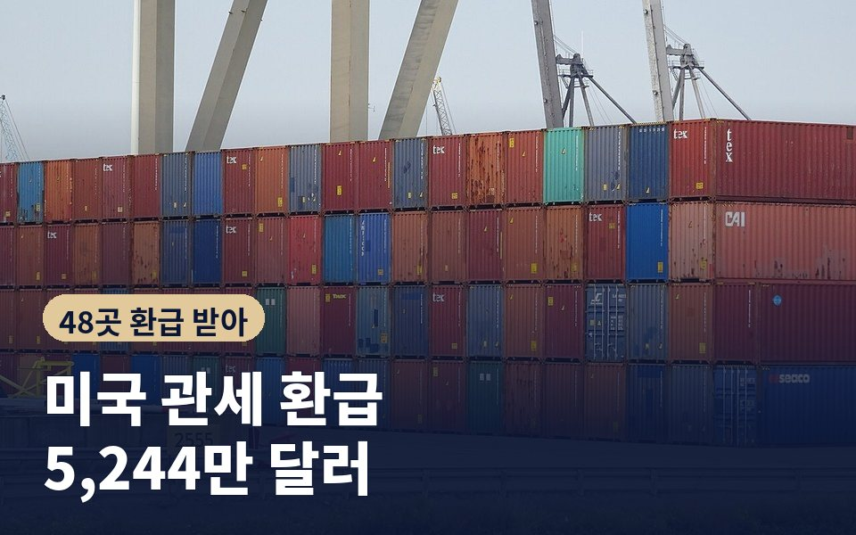
수출·기타 2026.10.16 · 뉴스핌코트라 지원 기업 48곳, 미국 관세 5,244만 달러 환급…지원은 급감
올해 1~9월 코트라 일대일 상담을 받은 54개사 중 48곳이 미국 관세 5,244만 달러를 돌려받았습니다. 하지만 환급 상담 건수가 4월 이후 크게 줄어 후속 지원이 필요하다는 지적이 나왔습니다.
글 읽기 →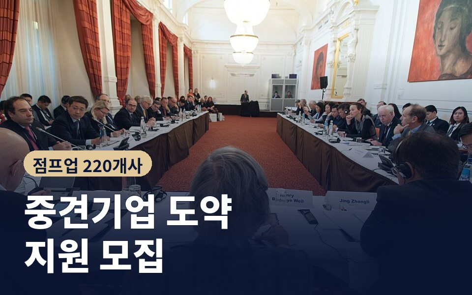
지원사업 공고 2026.10.16 · 신아일보중진공, 중소기업 220개사 '중견기업 도약' 지원 — 2027 점프업 모집
매출 단계별 3개 부문 220개사, 11월 13일까지 접수, 최대 연 7억5000만원
글 읽기 →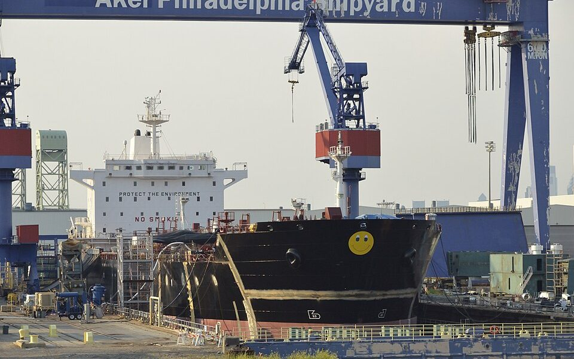
수출·기타 2026.10.16 · 파이낸셜뉴스해리스도 K조선 찾았다…미국 여야정 막론 '마스가' 기대
마스가 초도함·2번함은 국내, 3번함부터 미국 현지 건조 계획
글 읽기 →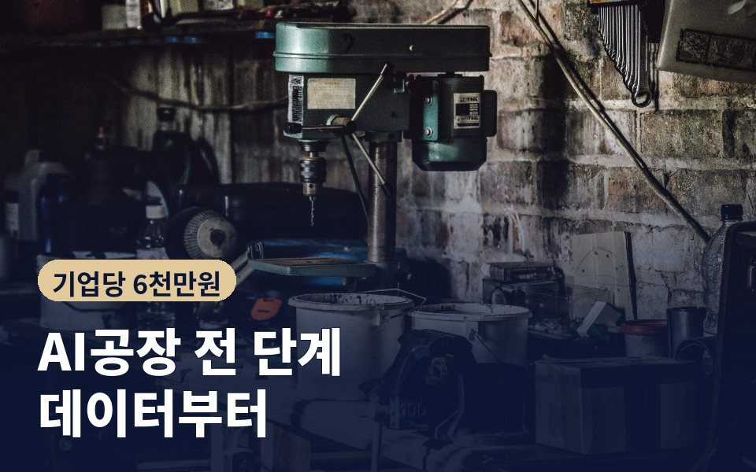
스마트공장 2026.10.15 · 코리아방송경남 '제조AI 데이터 활용' 지원…기업당 6천만원, 11월 4일 마감
양산시가 경남 스마트공장 기초구축·제조AI 데이터 활용지원 사업 참여기업을 모집합니다. 제조AI 데이터 사업은 기업당 최대 6천만원을 지원하며 11월 4일까지 신청합니다.
글 읽기 →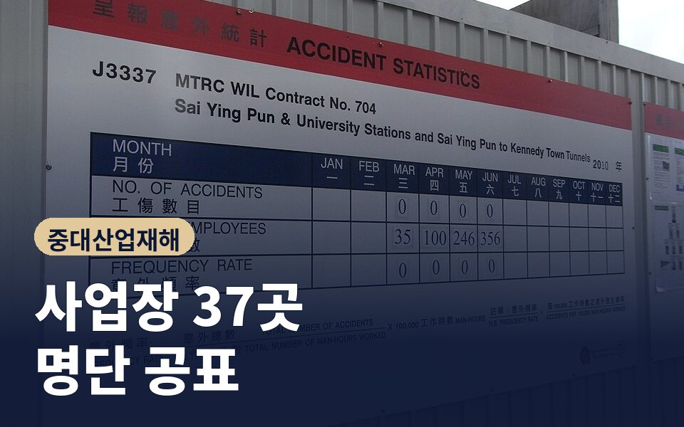
ISO·규제 2026.10.15 · 한국사회적경제신문고용노동부, 형이 확정된 중대산업재해 발생 사업장 37개소 공표
공표 81개소 중 75개소(92.6%)가 유해·위험요인 점검 위반
글 읽기 →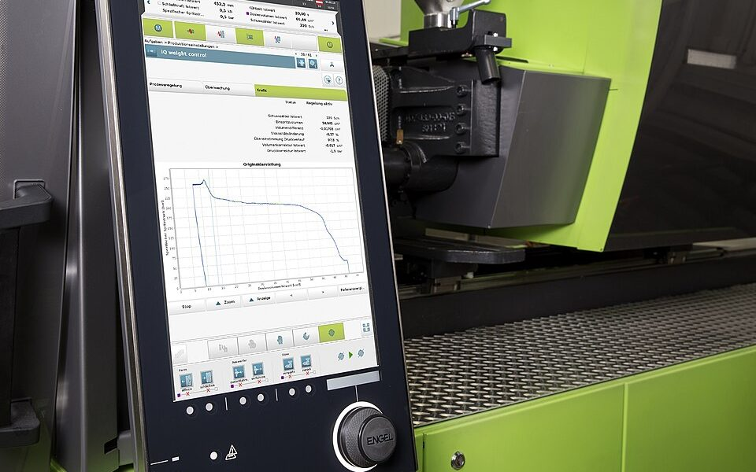
스마트공장 2026.10.15 · 신아일보[국감] 스마트공장 도입기업 32%, 구축업체 바꿔 유지보수…사후관리 '과제'
도입기업 105곳 중 34곳이 다른 업체로 유지보수, 공급기업 폐업·연락두절도
글 읽기 →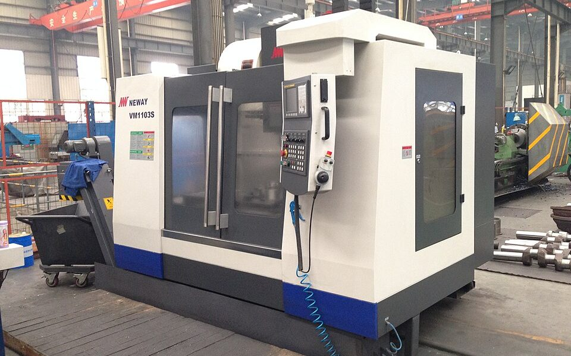
스마트공장 2026.10.15 · 뉴스후플러스중기부, 스마트공장 '제조AI'로 고도화…단계별 지원 강화
자동화 중심에서 AI 기반 생산·품질관리로, 디팜스테크 AI 외관검사 사례
글 읽기 →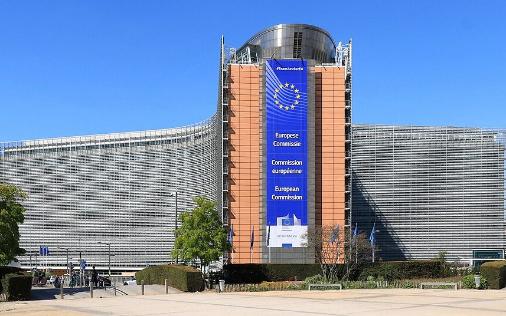
ESG·공급망 2026.10.15 · 뉴스핌"EU 공급망 실사, 결과보다 적절한 조치 입증이 핵심"…세종, CSDDD 대응 전략
옴니버스 개편으로 대상은 줄었지만 실사 절차·책임은 더 구체화
글 읽기 →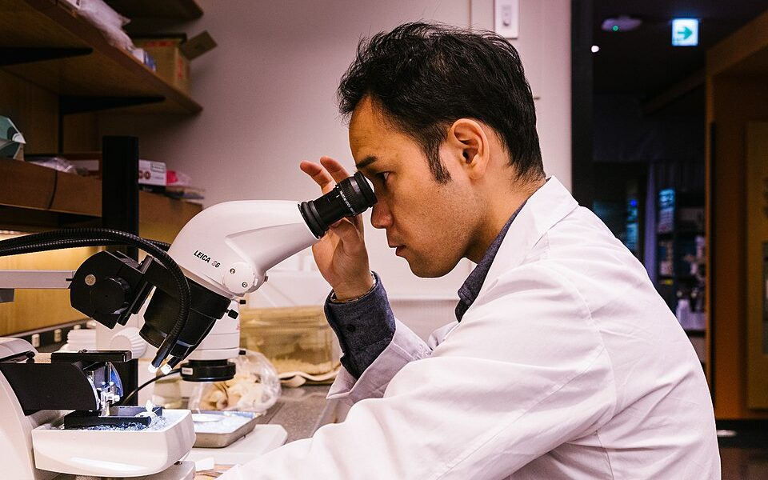
지원사업 공고 2026.10.14 · 오늘지원(기업마당 공고)2026년 지역거점 AX 혁신 기술개발 사업 신규지원 대상과제 공고
10월 29일~11월 12일 IRIS 접수, 지정공모 15개 과제, 중소기업 대상
글 읽기 →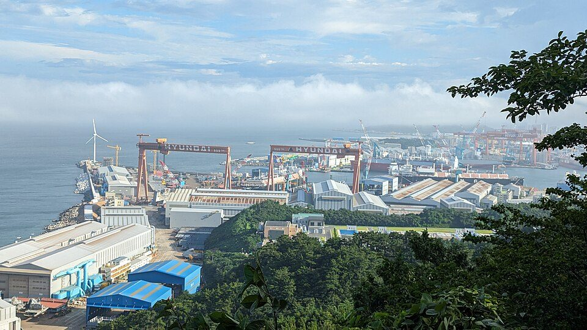
수출·기타 2026.10.14 · 에너지데일리조선산업 '국가전략산업'으로 키운다…중소조선 RG·기자재 국산화 지원
조선산업 특별법안 발의, RG 우선 지원·한미조선협력센터 근거 마련
글 읽기 →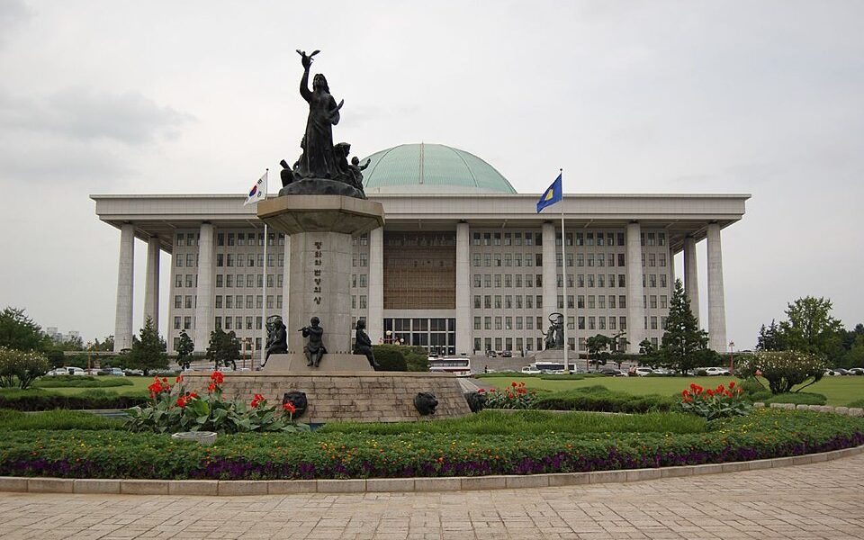
ISO·규제 2026.10.14 · 푸드투데이식약처 국감서 쏟아진 식품안전 현안…HACCP 인증 관리 도마
HACCP 업체 4년 반 18차례 위반에도 인증 유지, 인증취소 기준 보완 검토
글 읽기 →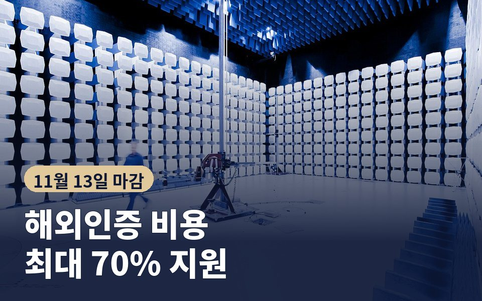
지원사업 공고 2026.10.13 · 투데이안중기부, 해외규격인증 획득 지원 3차 모집…최대 1억원, 11월 13일 마감
수출에 필요한 해외 인증·시험·컨설팅 비용의 50~70%를 지원하는 올해 마지막 모집입니다. 약 240개사를 뽑고 의료기기는 최대 1억5천만원까지 지원합니다.
글 읽기 →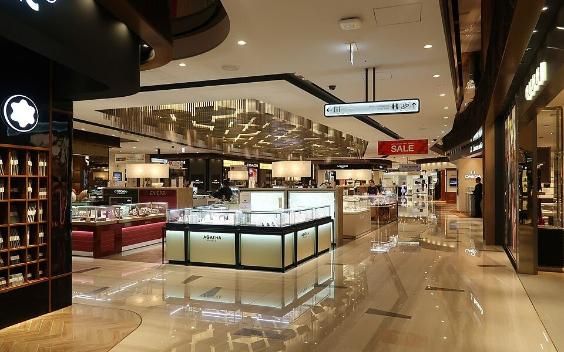
ESG·공급망 2026.10.13 · 한국경제대출 우대까지…롯데면세점, 중소 협력사 ESG 지원
상생협력기금 5000만원, 최대 10개 협력사 교육·컨설팅, 우수기업 금리 우대
글 읽기 →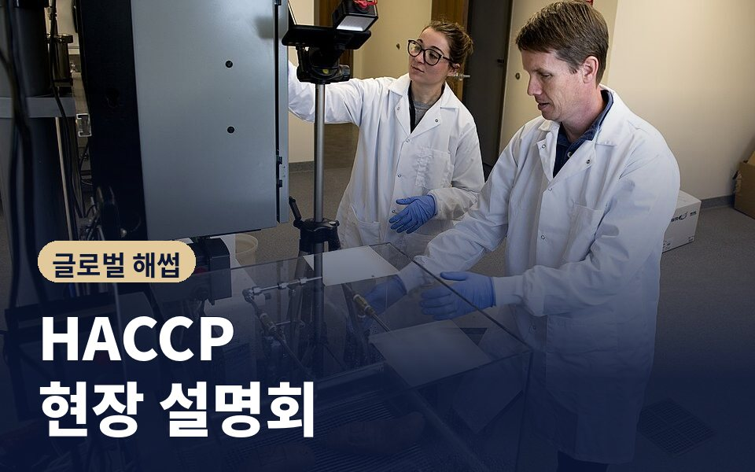
ISO·규제 2026.10.13 · 푸드투데이부산식약청, 경남서 HACCP 현장 설명회…글로벌 해썹 확대 지원
14일 경남도청 대강당, 2026 HACCP 정책·글로벌 HACCP 등록 기준 안내
글 읽기 →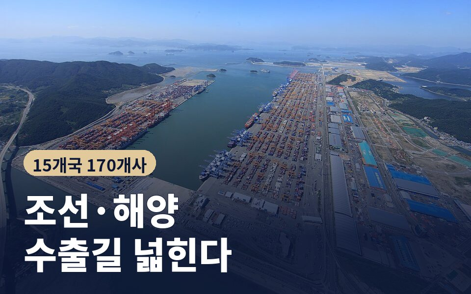
수출·기타 2026.10.12 · 서울경제조선·해양에너지 15개국 170개사 부산 집결…수출길 넓힌다
Offshore Korea 2026, 600개 부스, 해외 바이어 40여 개사 수출상담회
글 읽기 →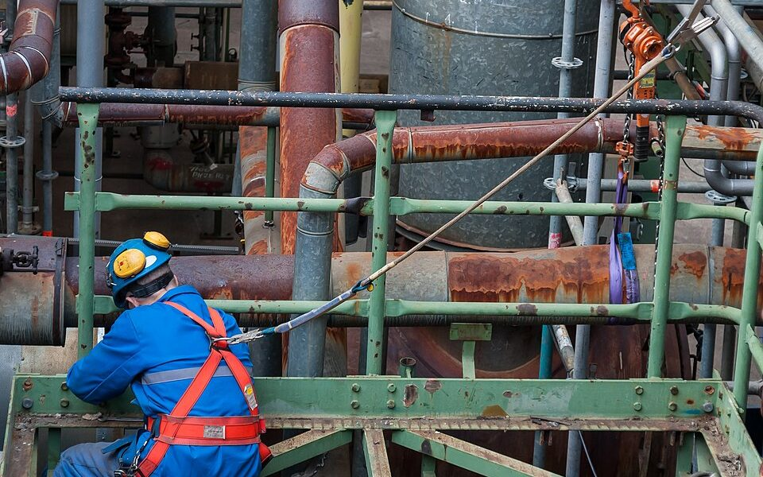
ISO·규제 2026.10.06 · 법률신문개정 산업안전보건법 5대 포인트
1년 3명 이상 사망 시 영업이익 5% 이내 과징금, 작업중지권 확대
글 읽기 →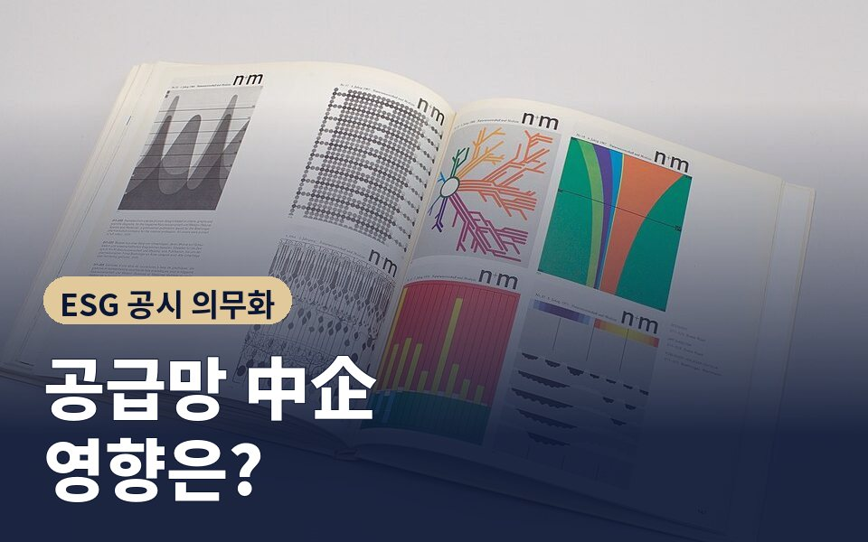
ESG·공급망 2026.10.06 · 헬로티[ESG 칼럼] 공시 의무화에 따른 공급망과 중견·중소기업 영향
2028년 사업보고서부터 기후 공시, Scope 3 공시로 협력사 데이터 요청 본격화
글 읽기 →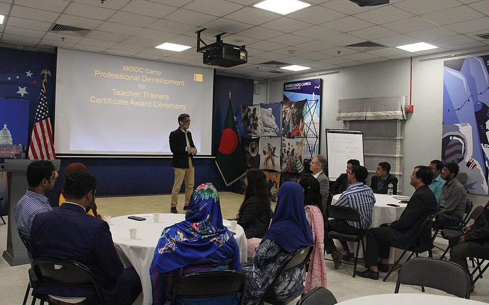
ISO·규제 2026.10.02 · 서울경제TV안전부터 청렴까지…한유원, ISO 국제표준 3종 인증 획득
ISO 45001·14001·37001 동시 확보, 안전·환경·부패방지 체계 구축
글 읽기 →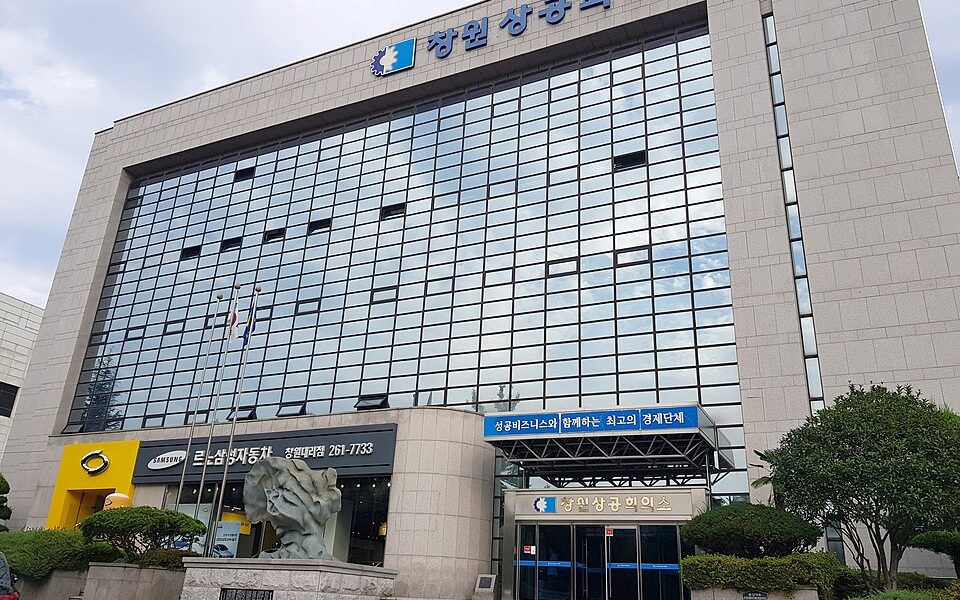
수출·기타 2026.09.16 · 웹이코노미창원특례시, 2026년 스마트 그린에너지 조선해양 수출상담회 개최
13개국 바이어 40곳 초청, 지난해 10개 기업 약 2956만 달러 상담 성과
글 읽기 →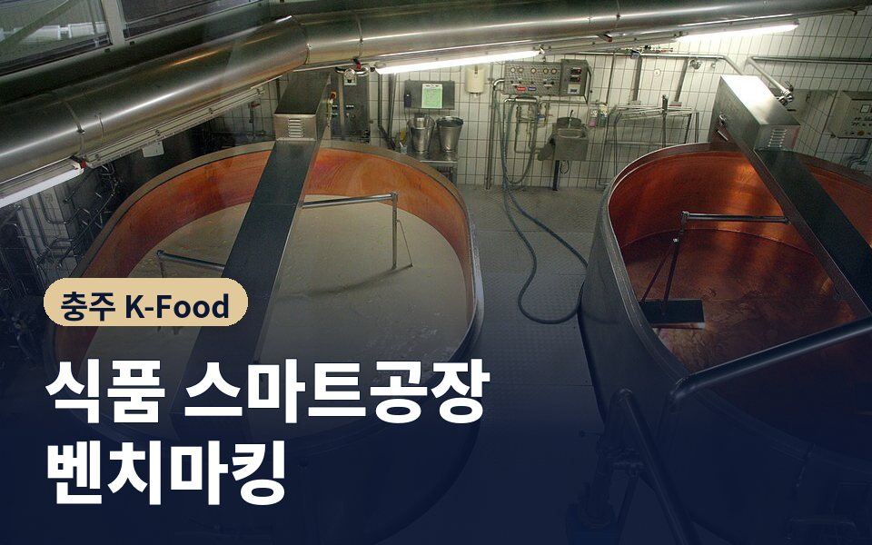
스마트공장 2026.09.15 · 뉴스핌중기중앙회, 충주 항아골서 'K-Food 스마트공장 벤치마킹' 개최
식품 제조 중소기업 20여 명, 스마트공장 도입 과정·성과·노하우 공유
글 읽기 →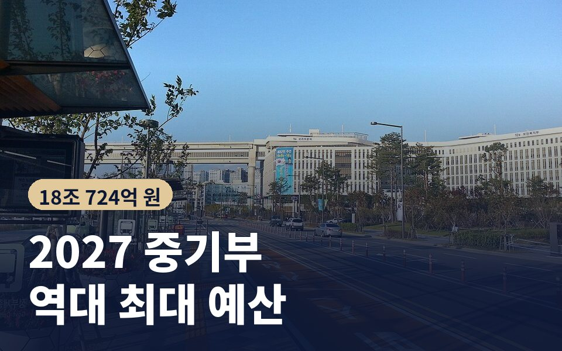
지원사업 공고 2026.09.02 · 정책브리핑2027 중소벤처기업부 예산안 사전브리핑 — 역대 최대 18조 724억원
올해 16조 5233억원보다 1조 5491억원 증가, 성장 단계별 지원 체계화
글 읽기 →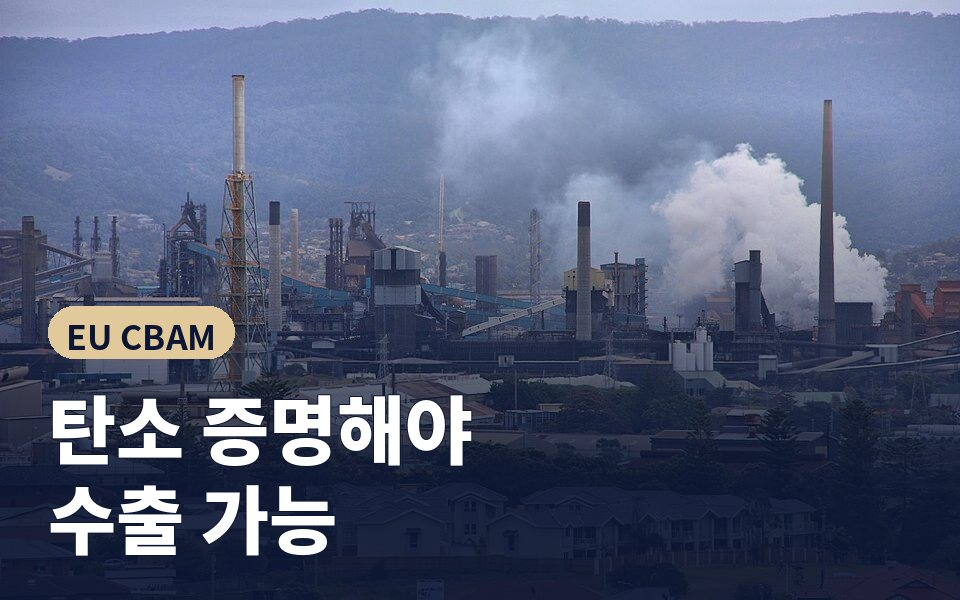
ESG·공급망 2026.09.02 · 미디어펜"탄소 배출 증명해야 EU 수출 가능"…정부, 중소기업 EU CBAM 대응 지원
산업부·중기부·기후부·관세청 합동 설명회, 배출량 계측·검증 비용 지원
글 읽기 →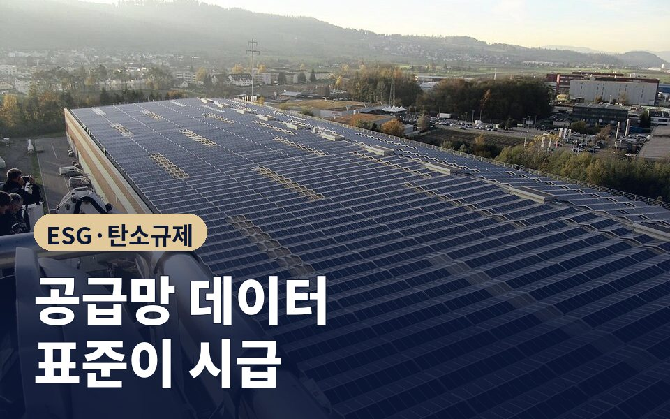
ESG·공급망 2026.08.20 · 에너지데일리ESG·탄소규제 코앞인데 기업 데이터는 '각자도생'…"공급망 표준 플랫폼 시급"
수출기업 99.3%가 고객사로부터 탄소배출 데이터 요구 받았거나 받을 예정
글 읽기 →기사 내용을 요약해 소개하며 원문 저작권은 각 언론사·기관에 있습니다. 가온 코멘트는 가온연구소의 의견입니다. 기사 사진은 자유 이용 허락(CC0·CC BY·CC BY-SA)된 사진이며, 작가와 라이선스는 각 글 아래에 표시했습니다.
뉴스는 많은데 우리 회사는 어디서부터?
업무 하나, 공정 하나부터 함께 정리합니다.
010-2244-3100